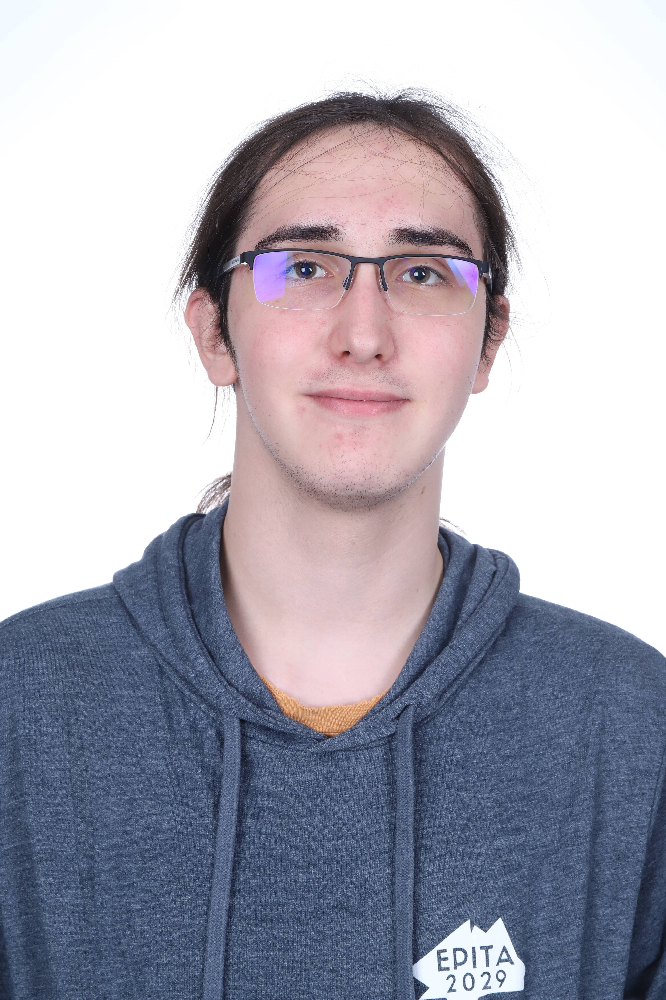
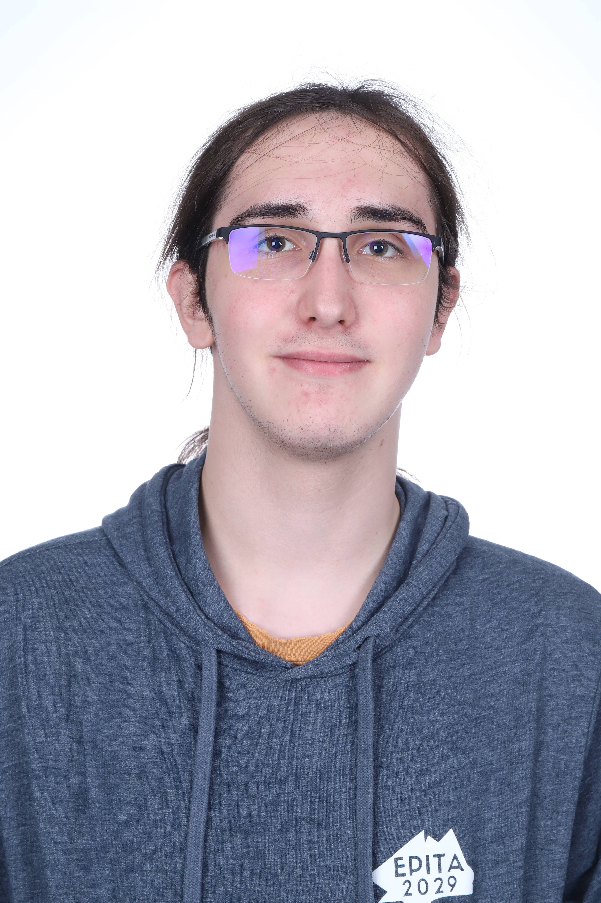

Yvan Prevost
 

Titulaire d’un Baccalauréat Français International, il est polyvalent à la fois culturellement et linguistiquement : une véritable patate ! Il fut initié aux jeux vidéo très jeune grâce à son père, dont la profession est reliée à leur création. Cela le conduira à aimer de plus en plus le domaine de l’informatique, notamment avec la découverte des scripts Python et Java, ainsi que le langage HTML. En intégrant l’EPITA, il espère pouvoir suivre les traces de son père et participer à la création de [Worcestershire Fish], à travers l’utilisation de Godot et du langage C# afin de porter à bien la réalisation du game design du projet.
Contact: